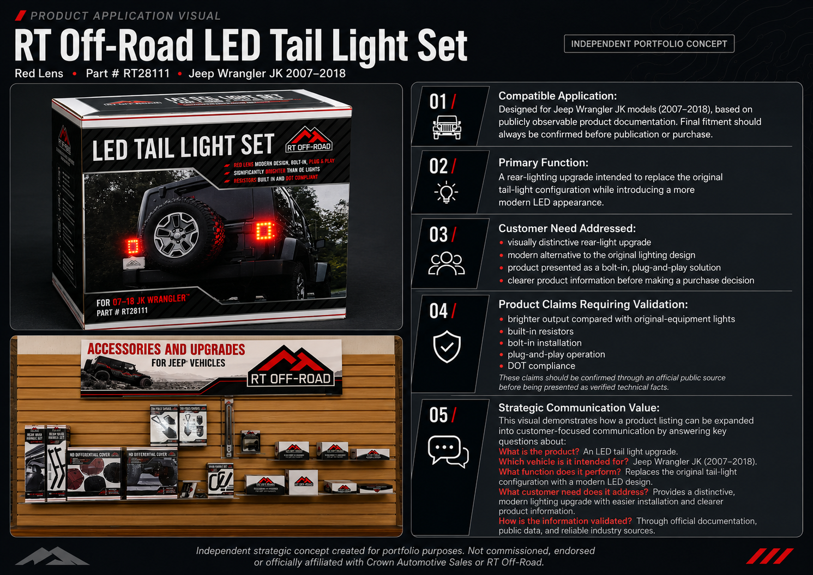
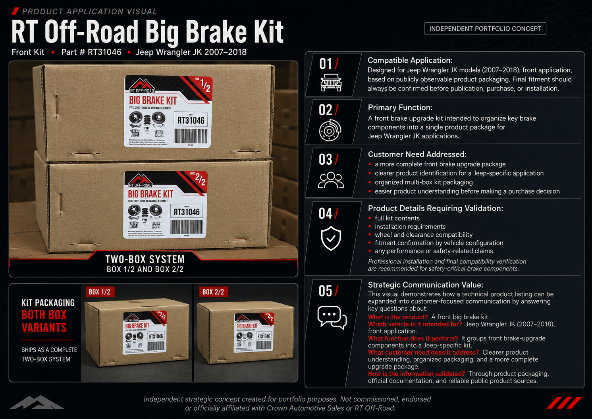

This independent case study explores how a specialized automotive parts business could strengthen its digital presence, communicate product value more clearly, and create stronger connections with the Jeep community through strategic, AI-assisted content.
Independent Strategic Case Study
Crown Featured Case
Independent Brand Visibility & Content Strategy
for the Jeep Parts Market
Not commissioned by, endorsed by, or officially affiliated with Crown Automotive Sales.
01
Executive Summary
Turning technical product information into clearer communication.
Strategic Focus
Identify communication opportunities, define relevant audiences, and translate technical information into useful, visually engaging content.
Project Scope
Product education, vehicle-specific applications, visual storytelling, short-form content, responsible AI workflows, and technical validation.
Evidence Standard
Publicly supported facts, clearly labeled independent interpretations, and proposed outcomes rather than unverified commercial results.
Context
Specialized products require more than a traditional listing.
The automotive aftermarket is a highly competitive environment in which product availability alone may not be enough to create strong brand visibility or lasting customer recognition.
Within the Jeep parts market, customers may also value clear product education, practical application examples, vehicle compatibility information, installation context, and content that reflects the identity associated with the Jeep community.
This independent case study examines how a specialized automotive parts business could strengthen its digital communication through a more consistent, audience-focused, and visually engaging content strategy.
The analysis does not evaluate confidential operations or internal performance. It focuses on publicly observable communication opportunities developed for portfolio and educational purposes.
02
Audience & Assessment
Understanding where the products appear and who the communication should serve.
Public Distribution Context
Products may move through manufacturers, distributors, specialized retailers, and professional automotive channels.
Publicly observable listings show Crown Automotive and RT Off-Road products presented through specialized Jeep-parts retailers, including platforms such as Quadratec.
This case study does not claim customer rankings, sales volumes, exclusivity, or internal commercial relationships that cannot be verified through reliable public evidence.
Jeep Owners & Enthusiasts
Customers looking for vehicle-specific parts, upgrades, restoration support, and clearer product explanations.
DIY Customers, Technicians & Installers
Audiences who may value fitment clarity, application context, installation guidance, and practical product details.
Retailers & Industry Professionals
Specialized sellers and automotive professionals who may benefit from clearer product communication and customer-education assets.
Independent Communication Assessment
Product communication should answer the customer’s practical questions.
Catalogs and product listings remain essential, but digital content can provide additional context around application, function, installation, and customer need.
What is the part?
Where does it fit?
What customer need does it address?
How is it used or installed?
Why is it relevant to the intended audience?
These audience segments and communication opportunities are proposed for strategic planning purposes. They are not presented as official Crown Automotive customer data or internal market research.
03
Strategy & Deliverables
Turning the assessment into a focused content system.
Strategic Objective
Develop a clearer, more engaging, and audience-centered content framework for communicating specialized Jeep parts across digital platforms.
Improve product understanding
Strengthen digital visibility
Support customer education
Connect with the Jeep community
Build a scalable AI-assisted workflow
04
Proposed Content Strategy
Five content pillars designed to support clarity, relevance, and consistency.
Product Education
Explain what the part is, what it does, and why it may matter to the customer.
Vehicle-Specific Applications
Connect products to compatible Jeep models, years, systems, and use cases.
Installation & Practical Guidance
Provide context around installation, fitment, preparation, and professional support.
Jeep Culture & Visual Storytelling
Use cinematic and community-oriented content to create stronger emotional relevance.
Retailer & Professional Support
Create content that can help specialized sellers and industry professionals explain products more clearly.
05
Content Formats & Deliverables
A realistic set of assets developed to demonstrate strategy and execution.
Hero Cinematic Video
A visual storytelling asset designed to communicate brand presence and Jeep culture.
Product Application Visuals
Two product-focused visuals showing application, function, customer need, and validation.
Educational Short-Form Pilot
A five-scene vertical content concept built around a clear product-education structure.
AI-Assisted Script & Workflow
A documented process showing how AI supported planning, writing, and visual direction.
Technical Validation Guidelines
A framework for reviewing fitment, specifications, claims, safety, and source reliability.
This scope reflects the realistic production capacity of the independent project. Each asset is included only when it adds clear strategic value and can be supported by visible execution, documented reasoning, and responsible validation.
06
Product Execution
Translating the strategy into visible, product-focused content.
Hero Cinematic Video
Visual storytelling designed to connect specialized Jeep products with the identity and energy of the Jeep community.
This cinematic concept demonstrates how product communication can move beyond a traditional catalog format and create a stronger, more memorable brand experience.
- Brand visibility and visual identity
- Jeep culture and community relevance
- Cinematic direction and short-form adaptability
- Independent portfolio execution
07
Product Application Visuals
Two product examples built around application, function, customer need, and responsible validation.

RT Off-Road
LED Tail Light Set — Red Lens
- Part Number
- RT28111
- Application
- Jeep Wrangler JK, 2007–2018
- Content Role
- Product education and vehicle-specific application
The visual framework introduces the product, identifies its intended vehicle application, and connects technical information with a practical customer need.

RT Off-Road
Front Big Brake Kit
- Part Number
- RT31046
- Application
- Jeep Wrangler JK, 2007–2018
- Package Structure
- Two-box product system
This concept demonstrates how a more complex product can be presented through clearer packaging context, application information, and structured customer education.
Product names, part numbers, and vehicle applications must be reviewed against reliable public documentation before final publication. Visual interpretations are presented as independent portfolio work.
08
Educational Short-Form Pilot
A five-scene structure designed to make technical product information easier to understand.
The RT28111 LED Tail Light Set was selected as the pilot product because it supports a clear sequence: attention, identification, application, customer need, and validation.
Storyboard ReadyHook
Capture attention with the visible upgrade.
Open with a strong Jeep-focused visual and a direct customer-facing question.
Product Identification
Introduce the RT28111 LED Tail Light Set.
Show the product name, part number, and key visible characteristics.
Vehicle Application
Clarify where the product fits.
Present the proposed application for the 2007–2018 Jeep Wrangler JK.
Customer Need
Connect the product to a practical purpose.
Explain the upgrade through visibility, appearance, replacement, and customer-use context.
Validation & Closing
Close with responsible verification.
Encourage confirmation of fitment, specifications, and installation requirements before purchase.
The pilot is presented as a storyboard and strategic content concept. It should not be described as a published campaign or measured commercial result until the final video is produced and deployed.